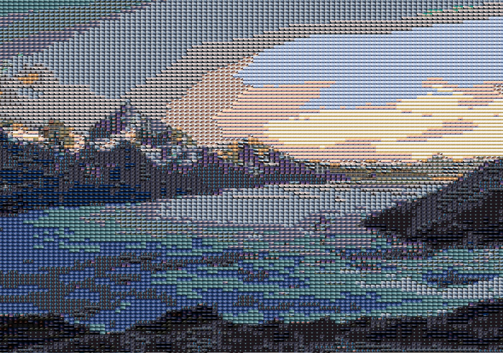
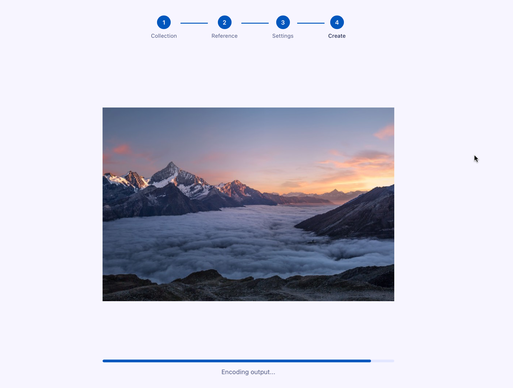

Create stunning photo mosaics from your personal collection.
100% private.
100% offline.
100% free.
verified_user Runs locally on macOS & Windows

Use hundreds of vacation photos to create a single breathtaking mosaic of your favorite destination.
Graduations, birthdays, anniversaries — transform years of memories into one meaningful piece.
Create a stunning mosaic from your most romantic moments, perfect as a keepsake or gift.
Select folders from your computer. Yosegi indexes your photos instantly without cloud uploads.
Pick your main photo and adjust the grid density and color blending modes.
Save your high-quality mosaic image. Share it or print it as a keepsake.

Processing 12,402 local images...
Start your private photo journey today. No subscriptions, no clouds, just your memories.
Download Nowdesktop_windows Windows 10/11 | laptop_mac macOS 12+